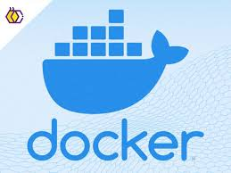

Benjamin Jaffe
👋 About Me
Hello! I'm Benjamin Jaffe 💻 — a passionate aspiring software engineer 🧠 with a love for creating innovative solutions to complex problems ⚙️. With a background in computer science 🎓 and full-stack development 🌐, I specialize in web development 💻 and cloud computing ☁️. I enjoy working on challenging projects 🚀 that push the boundaries of technology 🔬 and allow me to continuously learn and grow 📚. In my free time ⏰, I like to explore new programming languages 🧩, contribute to open-source projects 🌍, and stay updated with the latest trends in technology 📰. Feel free to explore my portfolio 🪄 to see some of the projects I’ve worked on!
📬 Contact Me
- 🎓 Email (School): bmjaff26@colby.edu
- 🏠 Email (Personal): benjaminjaffe8@gmail.com
- 📞 Phone: 202-660-2537
- 🐙 GitHub: benj652
👇 Scroll down to view the rest of my portfolio!
Work Experience
Software Engineering Intern
The Jackson Laboratory — Bar Harbor, ME
May 2025 – July 2025
- Integrated LLM-based transcription and NLP APIs into a backend pipeline using GCP to accurately transcribe medical conversations between oncology researchers, focusing on high-fidelity capture of rare gene and tumor names.
- Improved transcription accuracy of domain-specific terms by fine-tuning prompt engineering and evaluating output against biomedical benchmarks, ensuring critical terminology was consistently recognized.
- Collaborated with researchers and engineers to design a scalable transcription system, enabling reliable documentation of cancer research discussions for downstream analysis and study support.
Software Engineering Intern
Lion King Adventures — Remote
November 2024 – February 2025
- Led a team of three to develop a full-stack web application with the MERN stack to manage millions of dollars of hotel STO rates, increasing the sales team productivity by 50%.
- Constructed a robust and maintainable codebase using GitHub, saving future software engineers countless hours.
- Used Docker to deploy applications to Lion King Adventures' cloud infrastructure.
AI Coding Contributor
Outlier (Scale) AI — Remote
April 2023 – December 2024
- Managed training data to improve the performance of GPTs by analyzing, debugging, and rewriting code in C++, Java, TypeScript, and Python. Primarily worked on OpenAI’s ChatGPT.
- Worked in teams to help GPTs’ use of APIs to perform tasks such as web scraping, geographic calculations, and predictions based on recent events for deepthink.
- Worked as a reviewer, debugging and fact-checking team members’ work.
Computer Science Teaching Assistant
Colby College — Waterville, ME
February 2023 – Present
- Helped Computer Science students learn Python, Java, and VHDL programming concepts such as CRUD, FPGA, Object Oriented Programming, Data Structures, and Algorithms.
- Hosted weekly office hours to help students with their assignments and projects.
- Collaborated with professors to ensure hundreds of students have a positive experience.
Projects
TA Hours — Full-Stack App
Golang · Fiber · React · MongoDB · Docker
September 2024 – May 2025
- Led a team of three to develop a full-stack web application using Fiber serving a REST API with React as the frontend for CS330: Databases.
- Collaborated with teaching assistants and professors to track office hour attendance and performance to improve student learning.
Wood Classifier App
PyTorch · Flask · React · Redis · Docker
February 2024 – May 2024
- Created a React–Flask app, as part of the Colby Woodsmen Club, to help classify tree species by their bark.
- Used the WOOD-AUTH dataset with a Convolutional Neural Network (PyTorch) to achieve 89.77% testing accuracy and deployed the model through a Flask REST API.
Personal Finance App
React · Electron · Plaid API
June 2024 – July 2024
- Created a personal finance app using the Plaid API to fetch and visualize banking and investment data with Recharts.
- Built cross-platform desktop apps for Windows and Linux using Electron and a TailwindCSS-based React frontend.
Real-Time Chat App
MERN · Socket.IO · JWT
June 2023 – July 2023
- Developed a real-time chat application with user authentication and persistent JWT sessions.
- Implemented WebSocket communication via Socket.IO for instant messaging between users.
- Created a responsive React frontend and maintained the backend with Express and MongoDB.
Technologies
